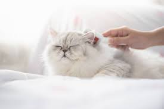

Барсик
Британская короткошерстная
Барсик - добрый и ласковый котик, который любит играть с мячиком и спать на подушке.
Мурзик
Мейн-кун
Мурзик - большой и пушистый котик, который любит охотиться на мышек и лежать на окне.

Пушок
Персидская
Пушок - красивый и грациозный котик, который любит ухаживать за своей шерстью и есть вкусную еду.